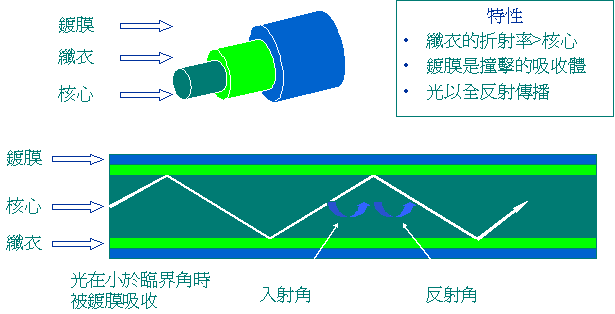
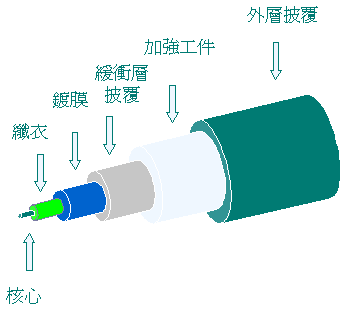
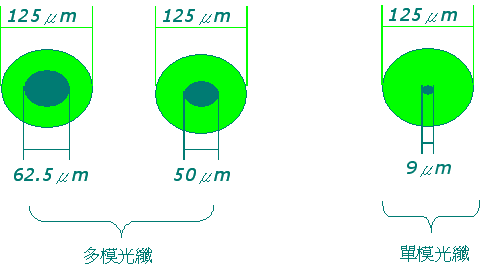
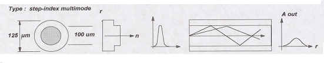
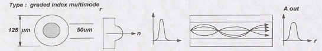
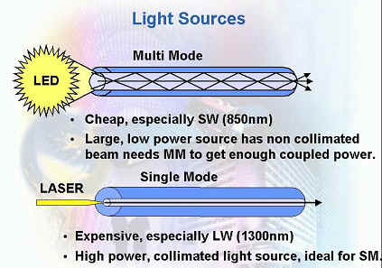
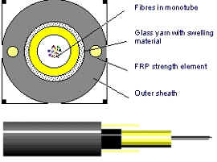
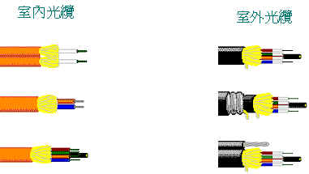

光纖技術及工程應用 (Fiber Optic Knowledge Base)
光纖通訊是利用光波在玻璃或塑料纖維中進行數據傳輸的技術。本章節由宏翔科技工程團隊整理，旨在提供最權威的技術指南。
1. 光纖的演進 (Evolution)
1966
高錕及 Georgo.A.Hockham 根據介質波導理論共同提出光纖通訊的概念。
1970
康寧公司成功研發出級射率光纖；同年貝爾實驗室研發出發光器，拉開光纖通訊序幕。
Today
通訊量由原有的 45 Mbit/s 提升至目前的 40 Gbit/s 以上。
2. 物理原理：全反射 (Total Internal Reflection)
光纖能長距離傳輸訊號，核心原理是利用光在不同折射率介質界面發生的全反射現象。

技術核心： 纖衣的折射率大於核心。當光線以小於臨界角射入時，光以全反射方式傳播；若大於臨界角，光則被鍍膜吸收。
3. 光纖基本結構與尺寸 (Structure & Sizes)
光纖從內到外主要由核心、纖衣、鍍膜、緩衝層及加強工件與外層披覆組成。

核心尺寸比較 (Core Size Comparison)
不同類型的光纖，其最主要的差異在於核心直徑的大小（單位：μm）：

4. 光纖傳播模態分類 (Propagation Modes)
依據光在光纖中傳播模態數量的不同，可分為單模與多模光纖。
4.1 單模光纖 (Singlemode, SM)

特性： 核心直徑極小 (5~10 μm)，僅能有效地傳送一個模態。
優勢： 可極大程度減少模間色散，傳輸距離最遠。
4.2 多模光纖 (Multimode, MM)
核心直徑較大 (50μm 或 62.5μm)，允許多個模態的光同時傳播。
A. 級射率多模 (Step-Index MM)
級射率光纖雖然在高頻寬及低損耗上不是最有效，但是目前最廣泛使用的類型。
B. 漸變折射率多模 (Graded-Index MM)
核心有無數中心層玻璃，折射率由軸心向外層遞減，可有效減少模間色散。
5. 發光器種類 (Light Sources)
多模光纖通常搭配廉價的 LED 光源，而單模光纖則需使用高功率的 LASER (雷射) 光源。

6. 光纜構造設計 (Cable Construction)
加強工件（如 Kevlar 或 FRP 棒）負責支撐張力與壓力，確保光纖在施工中不受損。

室內與室外光纜 (Indoor vs. Outdoor Cables)
光纜披覆提供保護免於磨損、酸鹼或溶劑影響。依環境不同分為室內型與室外型。

7. 國際技術參數參考表 (ISO/EN Parameters)
| 參數 (Parameter) | 多模 (Multimode) | 單模 (Singlemode) | ||
|---|---|---|---|---|
| 850nm | 1300nm | 1310nm | 1550nm | |
| 衰減值 Attenuation (dB/km) | 3.5 max | 1.0 max | N/A | N/A |
| 頻寬 Bandwidth (MHz·km) | 200 min | 500 min | N/A | N/A |
| 接頭損耗 Connector Loss (dB) | 0.75 max | 0.75 max | 0.75 max | 0.75 max |
| 反射損耗 Return Loss (dB) | 20 min | 20 min | 26 min | 26 min |
| 熔接損耗 Splice Loss (dB) | 0.3 max | 0.3 max | 0.3 max | 0.3 max |